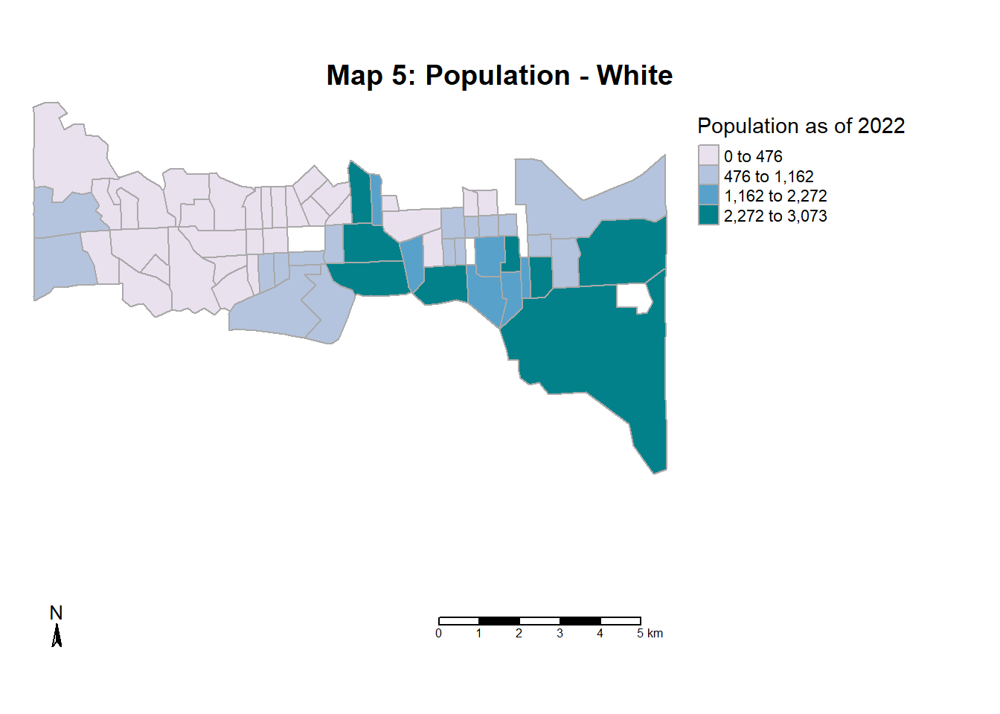

Final Term Assignment
Beyond the Rails: East-West Connect Policy
Paving the Way for Sustainable Urban Development through Transit-Oriented Growth
Baltimore, a historic port city in Maryland, is embarking on the ambitious “Red Line Project” to establish an east-west transit network aimed at promoting public transportation and fostering connectivity between the city’s western low-income communities and its wealthier eastern neighbourhoods. Initially stalled due to funding challenges, the project gained renewed momentum in 2023 following significant local pressure and community advocacy. Now underway, the Red Line Project holds the potential to significantly reshape the urban landscape of Baltimore.
However, as the project progresses, it is crucial to assess its potential impact on neighbourhoods and guard against unintended consequences such as gentrification and displacement. To mitigate these risks, here is the East-West Connect Policy, which outlines guidelines and strategies to minimize negative repercussions and ensure equitable development along the transit corridor.
To comprehensively understand the implications of the Red Line Project and the accompanying policy measures, it is essential to delve into the historical context, demographic composition, and socio-economic characteristics of the affected areas. By examining the unique dynamics of the communities adjacent to the transit corridor, we can better anticipate potential challenges and opportunities that may arise from the project’s implementation.
This report aims to provide a thorough analysis of the background and context surrounding the Red Line Project, offering insights into the diverse needs and interests of the residents and stakeholders involved. By synthesizing historical data, demographic trends, and socio-economic indicators, we can gain a deeper understanding of the complex interplay between transit infrastructure, urban development, and community well-being.
Ultimately, this report will conclude with a set of policy recommendations informed by our analysis, aimed at guiding future decision-making processes and ensuring that the benefits of the Red Line Project are equitably distributed across Baltimore’s diverse neighbourhoods. Through proactive planning and inclusive engagement, we can strive to create a more resilient and inclusive city for all residents. The report will shadow the following framework,
History of Baltimore City and its transportation and existing Transportation network
Transportation & Gentrification
The proposed Red Line Transit network
Demographic and socioeconomic analyses
Existing policies and comprehensive plans
Policy as a Catalyst
Successfully Implemented Policies
Policy Proposal
Conclusion
History
a.Baltimore City
Baltimore is known as the city of firsts. Primarily due to its port area, which acts as a gateway for the surrounding continents. It became the first terminus of the American federal highway in 1824 and carved a place for itself in the history of the United States. The city is home to a multicultural population and became the cultural and commercial hub in the 1850s, due to railroads, highways, and seaway connections.
The city of Baltimore is situated on the southeast-to-northeast corridor of the great migration of the 1920s as shown in Image 1. This is one of the reasons why the city is home to most African Americans in the US. The migration also invited people from several other parts of the world such as Germany, Eastern Europe, Italy, and the Middle East etc. The city has also seen some of the earlier violence in the American Civil War and other riots.@baltimoreheritage1

Discrimination was woven into the fabric of urban development, with historic Black neighbourhoods subjected to redlining, displacement, and predatory lending practices. This enduring legacy of segregation, dating back to well before the Civil War, remains a haunting reminder of Baltimore’s divided soul. The city’s racial strife transcends regional boundaries, defying easy categorisation as either Northern or Southern. Its unique blend of neo-Confederate sentiment and urban development-driven racism defies conventional narratives, painting a complex picture of systemic inequality and injustice.
In the face of such entrenched discrimination, Baltimore remains a testament to resilience and resistance. Its diverse communities continue to fight for justice and equality, confronting the legacy of segregation with courage and determination. Only by acknowledging and confronting its past can Baltimore hope to forge a more equitable future for all its residents.
b.Baltimore transportation history
Transportation in Baltimore dates back to 1844 when Omnibuses drawn by horses were introduced in the Baltimore region from Franklin Street to Broadway, located in the central Baltimore region. This created a massive amount of relocation amongst the population as now they could access outer parts of the city. In addition, this enhanced the property values in the vicinity as well as the outer parts of the city. The omnibus lines were in fashion for a decade after which a line of street coaches/cars was introduced in Baltimore, which threatened the omnibus culture. However, both the transit lines were harmoniously running parallelly looking after the residents. These streetcars played a pivotal role in shaping urban landscapes across the United States during the late 19th and early 20th centuries, serving as a crucial transit-accessible service. It not only facilitated transportation but also influenced the development of American Cities by delineating residential and commercial areas. The increased land values surrounding streetcar tracts generated significant tax revenue, which was subsequently reinvested into enhancing urban infrastructure.@ijerph16193683
In 1890, North Avenue Railway service began and the following year, cable car service was introduced by the Baltimore Traction Company. These services mainly ran in the central Baltimore region as at that time, the central region was most populated. Baltimore Transit Company (BTC) was formed in the year 1935, which formed a local bus network for the city as seen in the image. Metropolitan Transit Authority took over Baltimore Transit Company in year 1970. In 1983, the first phase of the Baltimore subway line was introduced and extended in 1987. The light rail network began 1992 from Timonium to Camden station and extended to Johns Hopkins Hospital in 1995. Baltimore National Heritage Area (2018) Most of the networks still exist in the city and the transport network is responsible for the city’s growth. However, the light rail and subway network does not cater to the west of Baltimore. It mainly caters to the central and eastern portions of the city, which is why the Red Line Transit line was introduced to fill this gap.
c.Current scenario
Due to Baltimore’s rich history of efficient bus networks, most of the city is well connected with multiple bus lines as of today. Old bus networks were updated frequently with newer buses. However, from a visual examination of the existing transportation system as seen on the city map-1, a fast rail network is missing connecting west to the east, except for the MARC Penn Brunswick line which is shown in pink colour.
MARC Penn Brunswick line connects Union Station in Washington DC to Perryville in Cecil County, Maryland, to the east of Baltimore city limits. It is an intercity link which is looked after by Amtrak. This rail line is the fastest in the United States with a speed of 125 miles per hour (201 km/hr). The line has two stops in Baltimore, namely West Baltimore and Penn Station, which it covers in about 10 mins. The Metro Subway line shown in Purple on the map is the Metro Subway line that connects Northwestern Baltimore to its city centre. If we look closely, we see a void between these two lines which are disconnected from the city centre which is the western region of Baltimore city.
2. Transportation & Gentrification
The term gentrification is defined by many scholars in different ways. In my opinion, It is a phenomenon where low-income residents migrate to other cities or neighbourhoods as middle/high-income residents invade their residences and capital investment in the area suddenly increases. These sudden increases in the area can be due to multiple factors such as real estate development, commercial area influx or transit corridor. The latter is a case of transit-induced gentrification where due to transit network insertion, the property prices go higher, forcing the locals to move and make room for a newer, wealthier population. In the paper named,’ The Colour of Health: Residential Segregation, Light Rail Transit developments, and Gentrification in the United States’, the authors talk about how investment in transit can result in gentrification. Although there are no significant alterations in the racial makeup of neighbourhoods, there are notable increases in rental prices and owner-occupied units and a wealthier population which invites the prevalence of vehicle ownership. Tehrani, Wu, & Roberts (2019)
Transportation insertions often result in gentrification as per a research paper by Isabelle Nilsson and Elizabeth Delmelle in their paper called, ‘Transit investments and neighbourhood change: On the likelihood of change’. They studied multiple cities, one of which was the city of Baltimore for its likelihood of changing based on the transit line insertion. The study showcases plausible results of changes in the neighbourhood with an influx of younger population migrating to the transit corridors and a rise in multi-family housing supply. (NILSSON2018167?)
Another Panel discussion on gentrification in Baltimore, titled ‘Redevelopment and justice in Baltimore,’ offered a comprehensive examination of the city’s history of displacement and redevelopment. The discussion highlighted how gentrification exacerbated existing disparities, with wealthier white residents moving into historically marginalized neighbourhoods while long-standing residents were pushed out. This mirrors past urban renewable efforts that displaced thousands of families, particularly African Americans. Key to understanding gentrification in Baltimore is the disparity in investment between predominantly white and black neighbourhoods, with resources disproportionately flowing to affluent areas. The discussion highlighted the potential privatization of historic spaces and public markets like the Lexington market, which threatens to further displace low-income residents. Community members expressed concerns about the impact of redevelopment on their neighbourhoods and cultural heritage. This discussion is the pivotal argument of this report and the policy as it concluded on the note that advocacy for policies that prioritize racial equity and social justice should be initiated. They also urged to engage with political representatives and support grassroots efforts to combat displacement and preserve community history. (MarylandMatters?)
3. The Red Line Project
The proposed Red Line in Baltimore represents a critical 14-mile east-west transit artery, linking a diverse array of neighbourhoods from Woodlawn in Baltimore County to the Johns Hopkins Bayview Medical Center as indicated in Image 3,(BaltimoreDOT?). Spanning through communities in West Baltimore, downtown Baltimore, Inner Harbor East, Fells Point, and Canton, the Red Line promises to mitigate traffic congestion and streamline transportation in these bustling urban corridors.

This transit route holds significant potential to simplify commuting for both residents and visitors, providing faster and more cost-effective travel options compared to traditional modes of transportation. Positioned strategically, the Red Line seeks to improve access to essential services, employment opportunities, and recreational amenities, thereby stimulating economic growth and enhancing social cohesion throughout the city.
4. Demographic and Socioeconomic analyses
To comprehensively assess the forthcoming implications of the Red Line transportation route, it is imperative to delve into the current attributes of the affected regions (See Map 1). These encompass the Woodlawn area of Baltimore County, communities in West Baltimore, downtown Baltimore, Inner Harbor East, Fells Point, Canton, and the Johns Hopkins Bayview Medical Center vicinity. By thoroughly examining the existing conditions and dynamics within these locales, we can gain valuable insights into the potential outcomes and ramifications of the Red Line project.
The central and southeast regions stand out as the most densely populated areas, contrasting with the relatively lower population densities observed in the northeast and certain western regions (Refer to Map 2). At the heart of this distribution lies downtown Baltimore, characterized by a bustling cityscape adorned with towering skyscrapers. Meanwhile, the southeast region is home to the Canton industrial area, serving as Baltimore’s busy port district replete with numerous industrial facilities.
In the city, the demographic makeup is primarily characterized by two principal racial groups: Black/African American and White, with a significant majority being Black/African American. This demographic pattern extends to the specific area under examination, where the population is predominantly composed of individuals who identify as Black/African American (refer to Graph 1). Spatially, these two racial groups are segregated into distinct western and eastern zones (see Maps 4 & 5), highlighting racial disparities in spatial distribution across the city. However, the central area stands out as a notable exception, exhibiting a more balanced representation of both racial populations. This suggests a unique demographic landscape characterized by a fusion of racial diversity in the central region of the city.

The demographic makeup of the area highlights a significant presence of youth (Refer to graph 2). The largest segment of the population consists of individuals within the working age range of 20 to 44 years, indicating a robust working-age cohort. Following closely behind are teenagers aged 19 and below, emphasizing the considerable representation of young individuals in the area. This demographic trend underscores the dominance of the youthful population, suggesting their prominence over other age groups within the community.
The predominant demographic cluster primarily resides in the central and southeastern regions of the focal area, indicating a concentration of youth within these localities. This observation suggests that the central and southeastern zones hold the highest proportions of youthful residents. Such a demographic distribution underscores the prevalence of the younger population cohort in these specific areas, highlighting their significant presence and influence within the community fabric (See maps 6 & 7).
Given that a significant portion of the population falls within the working class, it becomes crucial to analyse the distribution of median income in the vicinity of the focal area (Map 8). This distribution highlights certain key insights: notably, areas proximate to Canton and downtown Baltimore emerge as hubs of high employment opportunities, indicative of better quality of life and economic prosperity. Conversely, the prevalence of poverty in the area remains a pressing concern (Map9).
Furthermore, the phenomenon of gentrification is clearly observable in the downtown area, where high-income values coexist with a significant poverty rate. This juxtaposition highlights the ongoing transformation of the downtown landscape, driven by socioeconomic shifts and urban development initiatives.
Additionally, an analysis of the geographic distribution reveals that numerous predominantly black neighbourhoods (as illustrated in Map 4) are situated within areas characterized by poverty. This spatial correlation emphasizes the intersectionality of race and socioeconomic status, illuminating the disproportionate impact of poverty on minority communities within the region.
In light of the focus on implementing a transportation network in the area, it becomes essential to evaluate the genuine transportation needs of the population. Notably (refer to Map 10), central districts such as downtown, the west side of Baltimore, and Canton heavily rely on public transit, particularly among individuals aged 20 to 60 years. This observation underscores the vital role of public transportation in meeting the mobility requirements of a diverse demographic in these urban centres. Moreover, understanding the specific age groups that heavily utilize public transit facilitates the development of targeted strategies aimed at improving accessibility and efficiency within the transportation network.
5. Existing policies and comprehensive plans
The Maryland Department of Transportation (MDOT) and Baltimore City Department of Transportation (BCDOT) are the primary bodies working towards the enhancement of transportation in the city of Baltimore. Reports created by these departments mainly talk about the overall scope and zero energy initiatives in the city. MDOT and BCDOT created a dedicated body for the Red Line Transit line and have multiple reports and plans that look after the impact of the upcoming Red Line project and vision plans for the neighbourhoods around the rail station areas@baltimorecitydot. For example, there is a separate vision plan for the West Baltimore station surroundings and so on. These vision plans tell us future projects which can be incorporated to amplify economic growth and revitalize the neighbourhood. However, there is no mention of retaining and enhancing the cultural stops in these areas. The neighbourhood has a unique characteristic of the old town and should be retained. Apart from the obvious landmarks such as Harlem Park, Poppleton which is a 200-year-old graveyard, a 100-year-old ice factory near West Baltimore station, and a Jewish orphanage building in greater Rosemont, the overall structures and architecture of western Baltimore have to be retained and possibly upgraded to combat the incoming transit influx.
Baltimore City is currently in the process of formulating its comprehensive plan for future years. The city’s previous comprehensive plan, titled ‘Live-Earn-Play-Learn,’ which was adopted in 2006@BaltimorePlanning, primarily emphasized the augmentation of housing supply to accommodate the growing population through the development of multi-family residences. Although the plan outlined objectives related to historical preservation, there guidelines primarily focused on landmark preservation rather than encompassing preservation efforts for the entire area. It will be a good idea to incorporate the East-West Connect policy as a part of the comprehensive plan as it applies to a vast area. It is always a good idea for a city to progress while building upon the foundation laid out by its previous strategies, but introducing a new element to the plan which remains responsive to current demographic and socioeconomic shifts and can foster a better living environment for the existing residents is always a better idea.
6. Policy as a Catalyst
At present, Baltimore boasts a well-connected network of rail systems linking the north, south, and east sectors of the city. However, notably absent from this interconnected web is the West, an area that has been largely overlooked in terms of transportation infrastructure development. Recognizing this disparity, the state of Maryland proposed the Red Line rail network in 2015 as a strategic initiative to address this gap and improve connectivity across the region. Despite its initial conception, the project faced obstacles due to financial constraints, leading to its suspension. However, in response to vocal opposition from community organizations and subsequent backlash, the project was reintroduced in 2023.
Moreover, beyond its immediate transportation benefits, the Red Line project is anticipated to spur urban development. By seamlessly integrating the West into the broader transportation framework, this initiative has the potential to stimulate new avenues of economic growth and social interaction, fostering a more cohesive and dynamic urban environment. By extending the rail network to encompass the west, this endeavour aims to bridge existing gaps in mobility and ensure that residents in these areas are included in the city’s advancement.
Based on the latest data, residents in the targeted area overwhelmingly rely on individual car usage, as evidenced by the notable skew in favour of automobiles, as illustrated in Graph 3. Consequently, there exists a pressing need to promote the adoption of public transportation within this community. Encouraging greater utilization of public transit not only holds the potential to breathe new life into neighbourhoods but also serves as a pivotal strategy for advancing sustainable transportation practices. By shifting towards increased public transportation usage, residents can collectively alleviate traffic congestion, reduce carbon emissions, and mitigate the environmental footprint associated with personal vehicle usage. Beyond its environmental benefits, robust public transportation systems foster social cohesion by facilitating greater mobility and accessibility for individuals across diverse socio-economic backgrounds. This, in turn, promotes inclusivity and fosters a sense of community engagement and interconnectedness.
The newly proposed rail network combines elevated, on-road, and underground segments to connect various parts of the city. In the western region, it predominantly runs at ground level along the median of the US-40 highway or Edmondson Avenue. Upon reaching downtown Baltimore, the line goes underground, resurfacing as it heads towards the eastern end, where it becomes elevated for a stretch. Key intersections along the route include Rosemont, West Baltimore MARC, and Harlem Park in the west; Howard Street and Inner Harbor in the central area; and East Canton and Johns Hopkins Facility in the east.


Upon closer examination, the predominantly black neighbourhoods in the western region of Baltimore emerge as storied enclaves steeped in history and cultural significance. These communities, often referred to as heritage neighbourhoods, are characterized by their longstanding presence and rich architectural heritage. Their age is not merely a marker of time but a testament to the resilience and enduring spirit of their residents. Within these neighbourhoods, generations of families have woven the fabric of community life, nurturing traditions, and fostering a sense of belonging that transcends generations. The streets are lined with historic homes, each bearing witness to the passage of time and the evolution of the neighbourhood.
For residents of these heritage neighbourhoods, the proposed Red Line project represents more than just a transportation initiative; it is a potential catalyst for transformative change. While the project holds the promise of improved connectivity and enhanced access to opportunities, it also presents challenges and uncertainties. Preserving the cultural integrity and social fabric of these communities is paramount in the face of rapid urban development and gentrification pressures. As plans for the Red Line project unfold, it is essential to prioritize the needs and concerns of residents in these heritage neighbourhoods, ensuring that their voices are heard, and their interests are safeguarded.
7. Successfully Implemented Policies
To grasp the dynamics of transit-oriented developments (TODs) within culturally vibrant neighbourhoods, it is crucial to explore how such longstanding communities respond to abrupt transformations. Examining various examples of TOD initiatives provides valuable insights into this phenomenon, shedding light on both the process and outcomes. (TODSuccessStories?)
Concord Commons, Massachusetts:
Concord Commons serves as a compelling case study in TOD implementation. Situated in Massachusetts, this development exemplifies the intersection of urban planning and community engagement. Through strategic zoning and mixed-use development, Concord Commons has revitalized the surrounding area while preserving its historical character. Key takeaways include the importance of collaboration between developers and local stakeholders, as well as the integration of affordable housing options to ensure inclusivity and diversity within the neighbourhood.
Downtown Arlington Heights, Arlington Heights, Illinois:
In Downtown Arlington Heights, Illinois, TOD efforts have spurred economic growth and enhanced liveability. By leveraging transit infrastructure to attract businesses and residents, this vibrant district has transformed into a bustling hub of activity. The key takeaway from this example is the significance of fostering a sense of place through placemaking initiatives and pedestrian-friendly design principles.
Collingswood Station Transit Village, Collingswood, New Jersey:
Collingswood Station Transit Village in New Jersey exemplifies the potential of TOD to foster community cohesion and sustainable development. By integrating transit options with mixed-use development, Collingswood has created a walkable, transit-oriented neighbourhood that promotes social interaction and reduces reliance on cars. The success of this project underscores the importance of holistic planning and the alignment of TOD objectives with community values.
Downeaster Service, Boston to Portland:
The Downeaster Service connecting Boston to Portland offers a regional perspective on TOD initiatives. By expanding rail connectivity between major urban centres, this transit service has catalysed economic development along its route, spurring investment in transit-oriented projects and revitalizing downtown areas. Key takeaways include the role of regional collaboration in supporting TOD initiatives and the importance of leveraging transit investments to drive broader economic growth.
8. Policy Proposal
A comprehensive policy framework is essential for effectively managing the impacts of the upcoming transit network. Connecting contrasting neighbourhoods through this transit line (As seen in the images above) has the potential to spark rapid growth in commercial activities, drive up housing rents, trigger population surges, and potentially lead to gentrification, particularly in the low-income housing areas of the West, highlighted in Map 1. Therefore, it is imperative to develop a detailed policy tailored to the unique needs of Baltimore’s residents. This policy should aim to support growth while preserving the distinctive character and socio-economic fabric of each neighbourhood.
The policy can aim for transit-oriented development emphasizing affordable housing near transit hubs to ensure accessibility for residents across income levels. Through zoning incentives and partnerships, the policy can aim to foster mixed-income communities, preserving socio-economic diversity. Additionally, it can focus on prioritizing transit fare equity to guarantee accessibility for all. Exploring innovative fare structures, such as income-based pricing, the policy can aim to alleviate financial burdens on low-income households.
The framework can also encompass a planned development zoning scheme for areas surrounding station nodes, aiming to promote balanced development throughout the city. By strategically guiding development near transit stations, the aim is to decentralize growth and foster vibrant, mixed-use neighbourhoods beyond traditional city centres.
Based on the overall study of the area, following is the policy intervention to be considered with the Red Line Project.
East-West Connect Policy
This framework aims to ensure fair transit fares and promote transit-oriented development along Baltimore’s Red Line Rail network. Led by the Maryland Transportation Authority and Baltimore City Department of Transportation, it involves collaboration with local communities, designers, developers, and planners. Prioritizing affordability, diversity, and economic growth, the policy seeks to create a safe, accessible, and inclusive transport network fostering connectivity and sustainability citywide.
Aim
The policy aims to ensure equitable access to transportation by implementing fair transit fares across the Red Line Rail network. Additionally, it seeks to foster transit-oriented development while preserving the unique character of Baltimore’s neighbourhoods and culture.
| Name | Details |
|---|---|
| Policy Area | Focus area under Red Line Project |
| Target group | City of Baltimore focus area population. |
| Action by | Maryland Transportation Authority, Baltimore City Department of Transportation |
| Collaboration |
|
| Funding | Share of the Federal and State funding provision for the Red Line Project. |
| Objectives |
|
| Timeline | Since the Red Line project is currently in progress, the timeline of the policy is on hold. |
| Limitations |
|
| Framework : East-West Connect Policy |
9. Conclusion
In summary, the policy aims to establish an inclusive Red Line Project that emphasises equity and sustainability across Baltimore’s neighbourhoods. Further elaboration is necessary, particularly regarding proposed nodes along the rail network, with a focus on the western Baltimore city. While the Baltimore Transportation Authority has provided some details about node area development, more attention must be given to safeguarding older neighbourhoods from gentrification. The policy recommendation is constrained by the limited availability of housing data at the census tract and block group levels. This data is crucial for understanding the impacts of transit integration and can only be obtained through surveys. The necessity for this framework underscores the need for regulatory authorities to address gaps in their development proposals and formulate sustainable policies for the neighbourhoods of Baltimore. The success of this policy relies on effective implementation, necessitating collaboration and dedication from all stakeholders. Through careful execution, this policy has the potential to support Baltimore communities with fair and sustainable transportation solutions, promoting connectivity, economic growth, and social unity throughout the city.
References
Baltimore National Heritage Area. (2018). Baltimore transit: From omnibus to streetcar. Retrieved from http://places.baltimoreheritage.org/timelines/transit/
Tehrani, S. O., Wu, S. J., & Roberts, J. D. (2019). The color of health: Residential segregation, light rail transit developments, and gentrification in the united states. International Journal of Environmental Research and Public Health, 16(19). https://doi.org/10.3390/ijerph16193683